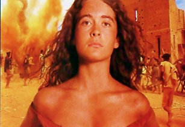

 Informações sobre o Filme: Tempo de Duração: 170 Minutos País: Brasil Idioma: Português Lançamento: 03 de Outubro de 1997 Gênero: Drama, Guerra, Histórico, Nacional Classificação: 16+ Estreia no Brasil: 03 de Outubro de 1997 Título Original: Guerra de Canudos Direção: Sergio Rezende
Resenha Crítica
Antônio Conselheiro era um peregrino e estava em busca de sua mulher, que fugiu com um amante, até se deparar com o padre Ibiapina, também peregrino que fazia obras de caridade. Isso influenciou Antônio e a partir disso ele se dedicou a leitura do evangelho e peregrinava ajudando os pobres, dando-os conselhos. Com isso, ele foi ganhando diversos seguidores, o que revoltou os latifundiários e aos padres, pois perdiam muitos trabalhadores e a influência sobre seus fiéis.
Após a proclamação da república, Antônio se rebela contra ela, pregando a seus fiéis que, na verdade, isso não lhe traria benefícios, pois os pobres continuavam sendo injustiçados e esquecidos. Ao comprar uma remessa de madeira e ter alguns problemas, policiais são enviados a Belo Monte e são derrotados facilmente, despertando o temor dos governantes pela possiblidade da volta da monarquia. Dessa forma, uma série de conflitos leva a Guerra de Canudos, que tinha por parte do governo, o intuito de matar todos os conselheiristas inclusive Antônio. Com mais homens, mais recursos e munições, após seis meses de guerra o exército retorna vitorioso.
É uma obra bem elaborada e com um conteúdo importante, visto que é baseada em fatos reais e demonstra a realidade brasileira da época. Apesar de ser destinada à toda população, chama ainda mais a atenção dos estudantes, pois ajuda a compreender um marco significativo na história.
O diálogo entre os últimos sobreviventes de canudos, demonstra a injúria deles com todo esse conflito, que não houve razões sólidas, na verdade, ele aconteceu pela insatisfação do governo com o comportamento daquele povo, por exemplo, por serem contra a coragem de impostos dos pobres. A obra serve como um exemplo de como ocorria a censura com todos aqueles que não possuíam os mesmos pensamentos que o Estado, além de demostrar a luta das minorias.
No final do filme, a fala: “ Sou negro treze de maio, fui liberto duas vezes: a primeira pela princesa Isabel, a segunda pelo meu bom pai conselheiro e agora vai ser a terceira, porque Deus não tarda e vem me tirar dessa miséria. Vou em paz. “, expõe todo sentimento de injustiça sofrida por esse povo, que mesmo em menor quantidade, foi altamente reprimido sem qualquer ato de misericórdia.
O escritor Euclides da Cunha, dizia que: “o sertanejo é, antes de tudo, um forte” e isso resume bem o contexto da película, pois, eles lutaram até o fim por aquilo que acreditavam. A obra é clássica e relevante para conhecimento da história do Brasil, suas fases e evoluções transmitidas de uma forma simplificada e transparente para o entendimento do interlocutor.
Temas Propostos
Questões sociais: